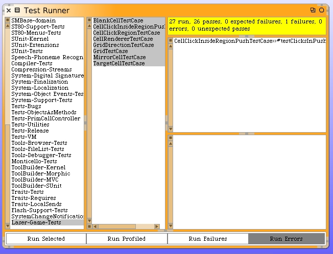

Run the unit tests.
We have a test failing. This could be either a fault in our code or even a problem with the unit test itself. It's possible that what we have written in our unit test may not be reasonable for how this game should really work. What I'm talking about is of course the boundary condition tests where the test points fall right on the lines and/or corners.
Click on the failing test and then open up the debugger. Let's see exactly where and why we are failing.
Our test fails for point 20@10. The code answered the West push region (CellClickRegionPushWest) but was expecting the CellClickRegionPushSouth.